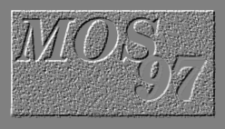

Third ECOOP Workshop on
MOBILE OBJECT SYSTEMS:
Operating System support for Mobile Object Systems
Jyväskylä, Finland, June 9-10, 1997
Call for Papers
SCOPE
The success of massively distributed systems has fuelled the search for
a programming paradigm that addresses issues of scale, efficiency and
security. Recently a number of new languages and systems that
support computation mobility have been developed.
Within the framework of object-oriented technology, mobile object
systems are groups of running objects that can move over heterogeneous
networks, carrying both code and execution state.
Languages vs. Network Operating Systems
Many of the environments for mobile object systems currently available
have come from the programming language and network community.
Languages such as Telescript, Extended Facile, Obliq and Java
have all been used to implement mobile computations.
In each case, an important part of the implementation was
devoted to a run-time system in charge of: (1) allowing multiple computations
to run concurrently, (2) protecting the host from the computation by strict
resource access control, (3) protecting computations from other computations,
(4) migrating computations. Most often, all of the features are implemented
anew, ignoring the services offered by operating systems. The reason is partly
because of the desire to be OS-independent and partly because currently OS
technology is felt to be inadapted to the needs of mobile applications.
Topics
The goal of this workshop is to explore new directions in operating systems
as well as the synergy with mobile computations and object-oriented
programming languages.
Thus we will identify needs of mobile programs and how these can be
met by the innovative operating system designs.
A non-exhaustive list of topics include:
- Operating systems for mobile computations
- Programming language support for mobility
- Integration of programming languages and operating systems
- Resource management techniques
- Innovative scheduling strategies
- Security mechanisms and policies for mobile computations
- Portable intermediate representations
- Linking issues
- Communication mechanisms
- Management of mobile object systems
- Experience reports
SUBMISSIONS
Prospective authors are invited to submit an electronic PostScript copy by e-mail to:
ecoopws@cui.unige.ch
The paper should be no more than 15 pages in the Springer-Verlag format
for Lecture Notes in Computer Science. Short papers and position papers
are welcome.
Papers that attempt to establish links between different approaches and/or
include expository or survey material, as well as presenting original results, are welcome. Results should be clear
and useful to other practitioners in the field. Description of a new
system should include reproducible, useful results or lessons learned.
Papers coming from the mobile computations community should highlight
technical aspects and operating system requirements. Papers from the
operating systems community should address issues relevant to mobile
computations.
All papers will be reviewed and electronic copies will be linked to the
Web page of the workshop.
PUBLICATION
The best papers will appear in extended form in a post-workshop
proceedings to be published, pending approval, as a Springer Verlag LNCS
volume.
To be considered for publication,
papers must be unpublished and not submitted for publication elsewhere.
FORMAT
The workshop will take place in the two days before the ECOOP'97
conference. The number of participants will be limited to 20 persons,
the selection will be based on the submitted material. The first day of
the workshop will be devoted to presentations of on-going work and of
state of the art systems. Discussions of the problem topics submitted
by the participants will take place on the second day.
Workshop attendees are expected to take an active part in the
discussions.
IMPORTANT DATES
- April 5, 1997: submission deadline
- May 5, 1997: notification of acceptance
- June 5, 1997: final version of papers
- Sept 5, 1997: camera ready version
PROGRAM COMMITTEE
- Joachim Baumann, IPVR U. of Stuttgart
- Andrew Black, Oregon Graduate Institute
- Luca Cardelli, DEC SRC
- Paolo Ciancarini, U. of Bologna
- Doug Lea, SUNY Oswego
- Jay Lepreau, U. of Utah
- Eric Jul, DIKU U. of Copenhagen
- Rui Oliveira, U. of Minho
- Marc Shapiro, INRIA
- Christian Tschudin, U. of Zurich
- Jan Vitek, U. of Geneva
ORGANIZATION
Last updated January 27, 1997.
Access counter